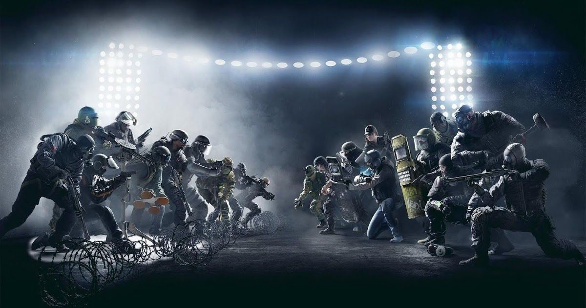

What is Rainbow Six Siege?
Rainbow Six Siege is an online tactical shooter video game developed and developed by Ubisoft. It was released worldwide on December 1st, 2015. The game puts heavy emphasis on teamwork and cooperation between players and on environmental destruction. Each player takes a role as a defender or attacker in different gamemodes such as Hostage, Secure area and Bomb. Although the game has no campaign, there are a series of short missions called "Situations" that can be played solo.
It recieved four nominations from the Game Critics Awards including Best of Show. The game recieved an overall positive reception from the critics due to its tense multiplayer and focus on tactics and teamwork. This game however, was criticized for its lack of a progression system and content. The sales on the game initially were weak, but as Ubisoft adopted the "games as a service" model and released many free packages, the player base rose significantly. Several years after its launch, critics regarded Rainbos Six Siege as one of the best multiplayer games on the market due to the many improvements Ubisoft had made to the game.